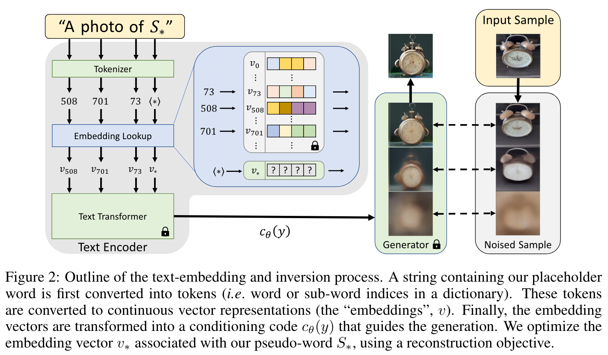
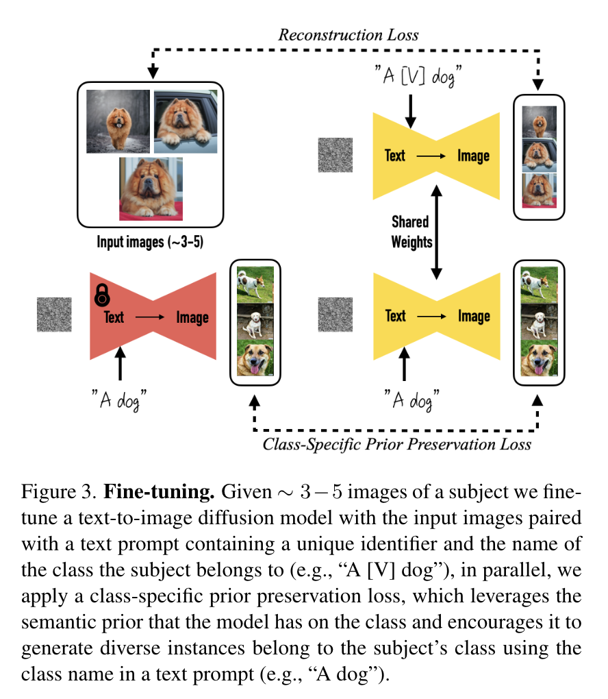
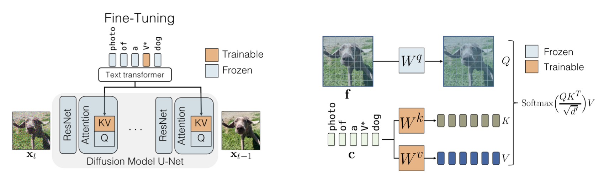
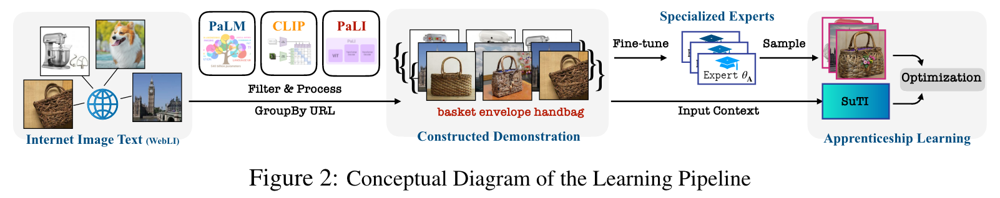
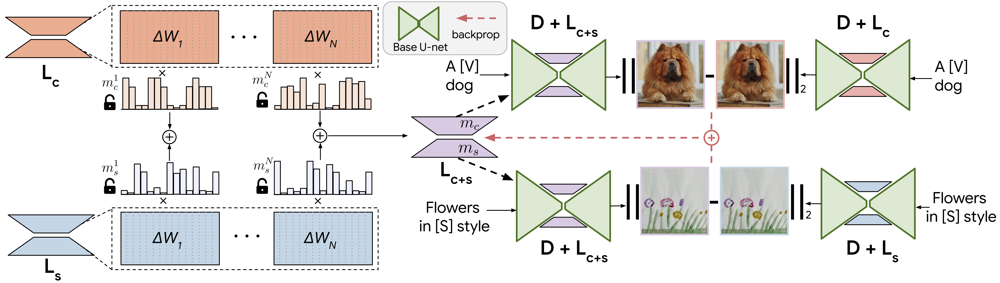

扩散模型应用·个性化生成
封面来自 CivitAI.
个性化生成（personalized generation），也称作主体驱动生成（subject-driven generation），指的是用户提供若干张（甚至只有一张）某物体的照片，模型生成该物体其他图像。
Textual Inversion
Tel Aviv University NVIDIA 2022.08.02
顾名思义，Textual Inversion[1] 采用类似于 GAN Inversion 的方式——在 text embedding 空间中寻找一个向量来重建原图。具体而言，给定 3-5 张描述某概念的图像，通过如下优化目标找到 word embedding \(v_\ast\)，使得提示词 \(\text{A photo of }S_\ast\) 能够重建输入图像： \[ v_\ast=\arg\min_v \mathbb E_{z\sim\mathcal E(x),\,y,\,\epsilon\sim\mathcal N(0,1),\,t}\left[\Vert\epsilon-\epsilon_\theta(z_t,t,c_\theta(y,v_\ast))\Vert_2^2\right] \] 
Textual Inversion 简单有效，并且最后只需要保存 embedding vector，所以文件非常小；但是效果会比微调整个模型的 DreamBooth 和微调额外网络的 LoRA（见下文）更差一些。
点击查看 Textual Inversion 的生成样例（摘自官网）


DreamBooth
Google 2022.08.25
与 Textual Inversion 几乎同时，DreamBooth[2] 也想到了让预训练模型学习用户指定的概念来进行个性化生成。为此，作者考虑将用户给出的物体与一个特殊的 identifier 绑定，然后用包含这个特殊 identifier 的 prompt 和用户的图像来微调整个 UNet. 微调结束后，只要用户输入的 prompt 中包含这个 identifier，那么模型就能生成用户想要的物体。整体思路清晰易懂，但是实现上有些小细节需要说明。
首先，这个 identifier 要与描述其类别的词一起使用，即 a [identifier] [class noun]，这样预训练模型能借用其已有的关于那个类别的知识，训练更快速稳定、生成的效果也更好。
其次，identifier 的选取也有讲究，应该尽可能避免使用常用的单词（如 "unique"、"special" 等），否则模型还得学会分辨什么时候这个词是原来的意思，什么时候是新的意思。然而，直接用随机的字符串也不是一个好的选择，因为 tokenizer 可能会把它拆散，变成常见的 tokens. 因此，作者先查找罕见的 tokens，再把它们映射回 text space 来得到 identifier.
最后，直接微调可能会导致 language drift 问题，即模型遗忘了预训练时的知识；模型还可能失去多样性，即生成的物体都有类似的姿态、视角。为此，作者提出了 prior preservation loss，在微调的同时用模型自己生成的样例监督它自己，相当于一个正则项，如下图所示：

点击查看 DreamBooth 的生成样例（摘自官网）

DreamBooth + LoRA
LoRA[3] 是一种参数高效微调方法（PEFT），最早应用于微调语言大模型之中，后来由 cloneofsimo 引入到对 Stable Diffusion 模型的微调之中。LoRA 并不改变原模型的权重，而是在线性层旁边新增一个下采样-上采样的支路，通过训练这个支路来完成微调。因此，同一个基底 Stable Diffusion 模型可以搭载不同的 LoRA 使用，具有很高的灵活性。由于 LoRA 支路网络的参数量小，相比微调整个模型，对算力的需求更加友好，并且也能达到不错的效果，因此很快受到大家的热烈欢迎，成为了目前最流行的微调 Stable Diffusion 的方法之一。
特别地，我们可以按照 DreamBooth 的方式（即使用 a [identifier] [class noun] 的描述词 + 正则化图像）来训练 LoRA，相比原始 DreamBooth 微调整个模型，资源消耗大大减小并且灵活性更高。
Custom Diffusion
CMU THU Adobe CVPR 2023 2022.12.08
不同于 DreamBooth 微调整个模型，Custom Diffusion[4] 只微调 cross-attention 层中的 K、V 投影矩阵以及一个输入 text token（如下图所示），微调时间大大减小的同时能取得与 DreamBooth 相当的效果。并且，Custom Diffusion 还支持合并两个微调的模型，实现多概念生成。

为什么选择 K、V 投影矩阵微调呢？因为作者分析了微调整个模型后各模块权重的相对变化量，发现 cross-attention 层的 K、V 投影矩阵变化最大。进一步地，这部分参数只占全部参数的 5%，说明了它们在微调中的重要性。具体到微调过程，其实与 DreamBooth 区别不大，也是使用特殊标识符，并且也使用了正则化图像。
关于多概念生成，作者尝试了两种方法，都达到了比 DreamBooth 更优的结果：
- 合并两个数据集同时训练两个概念；
- 分别训练之后合并模型。
第一种方法没什么好说的。对于第二种方法，作者将其形式化为了一个优化问题。设一共有 \(N\) 个概念，\(\mathbf c_i\in\mathbb R^{s_i\times d}\) 表示描述第 \(i\) 个概念的词汇 embeddings. 记原投影矩阵为 \(W_0\)，微调后的投影矩阵为 \(W_i\)，那么优化问题为： \[ \begin{align} &\hat W=\mathop{\arg\min}_W\Vert WC_\text{reg}^{\mathsf T}-W_0 C_\text{reg}^{\mathsf T}\Vert_F\\ \text{s.t.}\quad&WC^{\mathsf T}=V \end{align} \] 其中 \(C=[\mathbf c_1\cdots \mathbf c_N]^{\mathsf T}\in\mathbb R^{s\times d}\) 包含了所有 \(N\) 个概念一共 \(s\) 个目标词汇 embeddings，\(V=[W_1\mathbf c_1^{\mathsf T}\cdots W_N\mathbf c_N^{\mathsf T}]^{\mathsf T}\). 直观而言，我们希望优化后的投影矩阵在个性化概念上的输出与分别微调的模型保持一致，同时在正则化图像上与原模型的输出差异最小。这个优化问题具有封闭解： \[ \hat W=W_0+\mathbf v^{\mathsf T}\mathbf d \] 其中 \(\mathbf d=C(C^{\mathsf T}_\text{reg}C_\text{reg})^{-1},\,\mathbf v^{\mathsf T}=(V-W_0C^{\mathsf T})(\mathbf dC^{\mathsf T})^{-1}\).
点击查看 Custom Diffusion 的生成样例（摘自官网）
SuTI
Google 2023.04.01
DreamBooth 等方法需要为每种个性化主体分别微调出一个专家模型，比较麻烦。SuTI[5] 希望只使用一个模型，输入若干张主体图片，就能够生成该主体的其他图片，这样的模型被称作 apprentice model. 为了训练这个 apprentice model，我们需要一个大规模的个性化主体数据集，而数据的获取方式极其粗暴——从网络上爬几百万张图像，训练大量的专家模型，用这些专家模型来产生数据，如下图所示。虽然 SuTI 的训练消耗极大，但推断的时候能比基于逐主体优化的方法快 20 倍，相当于把时间开销从推断转移到了训练，因此如果模型能够开源出来，对普通用户无疑是一个好消息。不过嘛，考虑到这是 Google，而且 SuTI 基于的是未开源的 Imagen……恐怕是“可远观而不可亵玩焉”。

可以看出，SuTI 非常偏工程，比如怎么收集数据集、怎么把同一个主体聚在一起、怎么生成文本描述、怎么过滤质量差的图片等，对普通课题组没有太多的参考意义（而且也玩不起啊），这里便不再赘述。
SVDiff
Rutgers University Google 2023.05.20
SVDiff[6] 的动机与 LoRA、Custom Diffusion 类似，依旧是希望避免微调整个模型的所有参数，试图寻找一个更为紧凑的参数空间。具体而言，SVDiff 微调的是权重矩阵的奇异值，在 Stable Diffusion（全部参数占 3.66GB）上只需要微调 1.7MB 的参数，并且能够实现多概念生成。
微调权重矩阵的奇异值这一想法其实来自于 FSGAN[7]。对于卷积网络而言，我们首先将卷积层改写作全连接层：设卷积核为 \(W_\text{conv}\in\mathbb R^{c_\text{out}\times c_\text{in}\times h\times w}\)，输入的图像 patch 为 \(\mathbf x_\text{conv}\in\mathbb R^{c_\text{in}\times h\times w}\)，那么： \[ W_\text{conv}\otimes \mathbf x_\text{conv}\implies W\mathbf x \] 其中 \(W=\text{reshape}(W_\text{tensor})\in\mathbb R^{c_\text{out}\times(c_\text{in}\times h\times w)}\)，\(\mathbf x=\text{reshape}(\mathbf x_\text{conv})\in\mathbb R^{(c_\text{in}\times h\times w)\times 1}\). 对 \(W\) 进行奇异值分解： \[ W=U\Sigma_\sigma V^{\mathsf T}\quad \text{where}\;\Sigma_\sigma=\text{diag}(\sigma),\;\sigma=[\sigma_1,\sigma_2,\ldots] \] 我们通过训练 spectral shift \(\delta\) 来微调权重矩阵 \(W\)： \[ W_\delta=U\Sigma_\delta V^{\mathsf T}\quad\text{where}\;\Sigma_\delta=\text{diag}(\text{ReLU}(\sigma+\delta)) \] 对于两次微调的 spectral shift \(\delta_1,\delta_2\)，我们可以设计一些方式将它们融合起来： \[ \begin{align} &\Sigma_{\delta'}=\text{diag}(\text{ReLU}(\sigma+\delta_1+\delta_2))&&\text{addition}\\ &\Sigma_{\delta'}=\text{diag}(\text{ReLU}(\sigma+\alpha\delta_1+(1-\alpha)\delta_2)),\quad 0<\alpha<1&&\text{interpolation} \end{align} \] 至于多概念生成，作者提出了一种数据增强方法 Cut-Mix-Unmix，通过左右拼接两个概念的图像作为数据来训练模型。另外，作者还通过只在一个图像文本对上微调的方式实现了单图像编辑。私以为这两点的做法并不优雅，这里就不赘述了。
点击查看 SVDiff 的生成样例（摘自官网）

ZipLoRA
Google UIUC 2023.11.22
自 DreamBooth + LoRA 提出后，该方法得到了人们的广泛使用。但是随之而来了一个问题：能否同时使用多个 LoRA？早期人们的解决方案是直接将两个 LoRA 的权重按比例加起来： \[ \Delta W_\text{merge}=w_1\cdot\Delta W_1+w_2\cdot\Delta W_2 \] 其中 \(w_1,w_2\) 是超参数，控制各个 LoRA 的“强度”。不过，为了达到理想的效果，这两个超参数往往需要仔细调整，非常不方便。
为此，研究人员提出 ZipLoRA<span class="hint--top hint--rounded" aria-label="Shah, Viraj, Nataniel Ruiz, Forrester Cole, Erika Lu, Svetlana Lazebnik, Yuanzhen Li, and Varun Jampani. "Ziplora: Any subject in any style by effectively merging loras." arXiv preprint arXiv:2311.13600 (2023).">[8]，试图不依赖任何超参数地合并两个 LoRA 权重。具体而言，作者关注的是合并一个内容 LoRA \(\Delta W_c\) 和一个风格 LoRA \(\Delta W_s\)，使可以生成指定风格的指定主体。作者首先分析了已有的 LoRA 的权重，有两个重要发现：
- LoRA 权重的绝大部分都接近于零，甚至将 90% 的权重置为零都不怎么影响生成效果。
- 如果两个 LoRA 权重的对应列的余弦相似度很高，那么按直接相加的方式合并的效果很差；相反，如果列与列之间是正交的，那么效果就不错。
于是，作者认为我们应该尽可能在合并两个 LoRA 权重时使它们对应列正交，为此设计了如下合并方案： \[ \Delta W_\text{merge}=m_c\otimes \Delta W_c+m_s\otimes\Delta W_s \] 其中 \(m_c,m_s\) 是可学习向量，维度等于 \(\Delta W_c,\Delta W_s\) 的列数。上式的含义是对 \(\Delta W_c\) 和 \(\Delta W_s\) 的各列加权求和。

如图所示，损失函数为： \[ \begin{align} \mathcal L_\text{merge}&=\Vert(D\oplus L_m)(x_c,p_c)-(D\oplus L_c)(x_c,p_c)\Vert_2\\ &+\Vert(D\oplus L_m)(x_s,p_s)-(D\oplus L_s)(x_s,p_s)\Vert_2\\ &+\lambda\sum_i|m_c^{(i)}\cdot m_s^{(i)}| \end{align} \] 其中 \(D\) 表示预训练权重，\(L_m,L_c,L_s\) 表示 LoRA 层的集合，\(D\oplus L\) 表示配备了 LoRA 的模型。\(x_c,x_s\) 为训练用的内容图像和风格图像，\(p_c,p_s\) 为文本 prompt. 损失函数的前两项是正常的重构损失，最后一项是为了鼓励各自 LoRA 权重列之间的正交性。【说实话我并没有看出来怎么鼓励正交性了？】基础模型和要合并的 LoRA 权重都是固定的，只训练合并系数 \(m_c,m_s\)，因此非常高效。实验在 SDXL 上进行，只需要 100 次梯度更新即可。
点击查看 ZipLoRA 的生成样例（摘自官网）

References
- Gal, Rinon, Yuval Alaluf, Yuval Atzmon, Or Patashnik, Amit H. Bermano, Gal Chechik, and Daniel Cohen-Or. An image is worth one word: Personalizing text-to-image generation using textual inversion. arXiv preprint arXiv:2208.01618 (2022). ↩︎
- Ruiz, Nataniel, Yuanzhen Li, Varun Jampani, Yael Pritch, Michael Rubinstein, and Kfir Aberman. Dreambooth: Fine tuning text-to-image diffusion models for subject-driven generation. arXiv preprint arXiv:2208.12242 (2022). ↩︎
- Hu, Edward J., Yelong Shen, Phillip Wallis, Zeyuan Allen-Zhu, Yuanzhi Li, Shean Wang, Lu Wang, and Weizhu Chen. Lora: Low-rank adaptation of large language models. arXiv preprint arXiv:2106.09685 (2021). ↩︎
- Kumari, Nupur, Bingliang Zhang, Richard Zhang, Eli Shechtman, and Jun-Yan Zhu. Multi-concept customization of text-to-image diffusion. In Proceedings of the IEEE/CVF Conference on Computer Vision and Pattern Recognition, pp. 1931-1941. 2023. ↩︎
- Chen, Wenhu, Hexiang Hu, Yandong Li, Nataniel Rui, Xuhui Jia, Ming-Wei Chang, and William W. Cohen. Subject-driven text-to-image generation via apprenticeship learning. arXiv preprint arXiv:2304.00186 (2023). ↩︎
- Han, Ligong, Yinxiao Li, Han Zhang, Peyman Milanfar, Dimitris Metaxas, and Feng Yang. Svdiff: Compact parameter space for diffusion fine-tuning. arXiv preprint arXiv:2303.11305 (2023). ↩︎
- Robb, Esther, Wen-Sheng Chu, Abhishek Kumar, and Jia-Bin Huang. Few-shot adaptation of generative adversarial networks. arXiv preprint arXiv:2010.11943 (2020). ↩︎
- Shah, Viraj, Nataniel Ruiz, Forrester Cole, Erika Lu, Svetlana Lazebnik, Yuanzhen Li, and Varun Jampani. "Ziplora: Any subject in any style by effectively merging loras." arXiv preprint arXiv:2311.13600 (2023). ↩︎